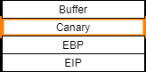

Stack Canary (or Stack cookie)
The term
canary comes from the canary used in the coal mines.
This is a security implementation that places a value next to the return address on the stack.
The function
prologue loads a value into this location, while the
epilogue makes sure that the value is intact.
When the
epilogue runs and checks that the value is incorrect a Buffer Overflow has probably taken place.
This is because a buffer overflow usually overwrites data in the stack.
